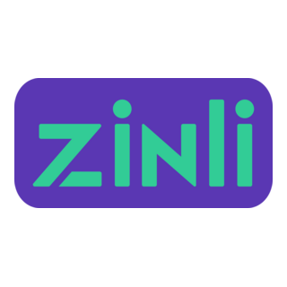

Este sitio es creado en Venezuela, si estas en venezuela y quieres apoyar, puedes donar tambien desde tu banco de preferencia, recuerda poner tu apodo en la descripcion del pago para que aparezcas en los donantes recientes, y en el TOP 5 Mejores donantes de la semana.
Escanea el QR desde la aplicación de tu banco para obtener los datos para donar


Puedes realizar tambien una donacion por Zinli
Las donaciones no son oligadas, esto viene de parte del usuario para apoyar directamente al sitio para motivar a seguir subiendo contenido, se añadiran a los 5 mejores donantes de la semana.